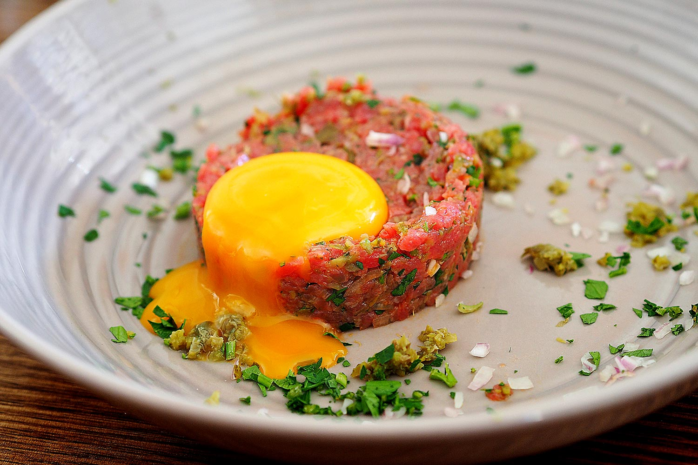

This is Steak Tartare
It is good, healthy, and easy to make - do you like it raw, or RAW?

What is it?
Steak Tartare is a wonderful meat dish, often served with various vinegars, olive oil, capers, pickles, onion, tabasco, and an egg yolk. It is healthy, filling, easy to make and DELICIOUS.
Ingredients
- Sirloin
- Vinegar
- Dijon mustard
- Egg yolks
- Olive oil
- Challots
- Capers
- Salt
- Lemon zest
- Tabasco
How to make it
You need to know how you like it - spicy (a lot of tabasco) or not, with or without egg yolk, pickles, capers, et.c. Most ingredients are optional, except of course the meat, and perhaps the vinegar and olive oil.
Steps
- Manually cut up the raw sirloin meat in to small chunks (half the size of a dice, at least.
- Mix in olive oil and vinegar
- Add other ingredients, to taste